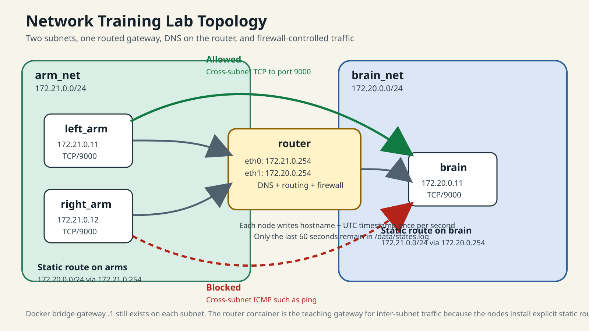

A hands-on lab for interfaces, layer 2 neighbors, routes, gateway behavior, DNS, firewall policy, and packet capture.

docker compose exec left_arm bash ifaces ip neigh show dev eth0 arping -I eth0 right_arm l2-neighbors
Also point out that Docker’s bridge endpoint at `.1` is visible at layer 2 even though your training gateway is `.254`.
docker compose exec left_arm bash routes ip route get 172.20.0.11 docker compose exec brain bash routes ip route get 172.21.0.11
`172.20.0.0/24 via 172.21.0.254`
`172.21.0.0/24 via 172.20.0.254`
This is the clean handoff between layer 2 and layer 3: `brain` is not on the local segment, so the packet goes to the router.
docker compose exec left_arm bash dns nslookup brain check-router check-brain
`172.21.0.254`
`172.20.0.254`
Cross-subnet TCP to port `9000`
Name resolution and routing both succeed
Cross-subnet ICMP such as `ping brain`
docker compose exec router bash demo-reset fw iptables -S FORWARD
docker compose exec router bash sniff-9000 docker compose exec left_arm bash sniff-brain printf "hello\n" | nc brain 9000
`sniff-brain` is more focused on a node. `sniff-9000` is better on the router when you want to show the path across subnets.